Приложение в Telegram
Идеи и желания превращаются в планы
Astor помогает находить места и события, собирать друзей и организовывать встречи. В центре – ИИ-помощник Astor: скажите своими словами, чего хочется.
Устанавливать ничего не нужно: приложение открывается прямо в Telegram. Сейчас работает в Екатеринбурге.

Что уже есть
Экраны приложения Astor
Так приложение выглядит сейчас. Места и афиша на снимках настоящие, друзья – демонстрационные.
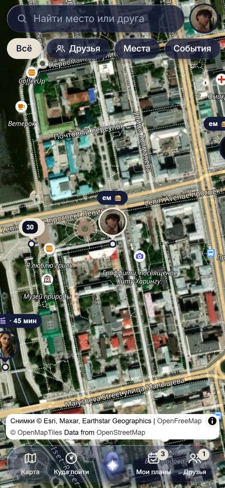
Карта
Друзья и места рядом. Друг виден, только если сам включил показ.
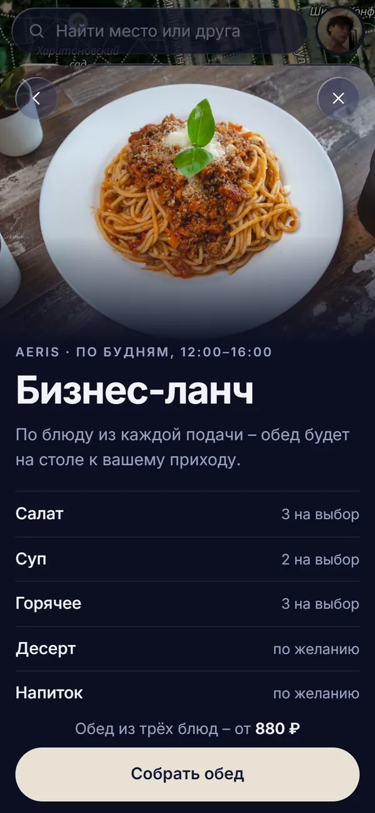
Бизнес-ланч
По будням соберите обед из блюд ресторана заранее – он будет на столе к вашему приходу.
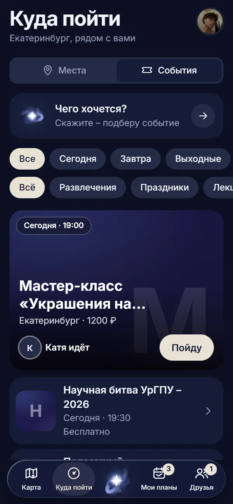
События
Афиша города на сегодня, завтра и выходные. Видно, кто из друзей идёт.
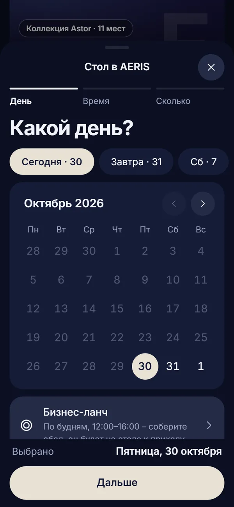
Бронь стола
День, время и число гостей – заявка сразу уходит в ресторан.
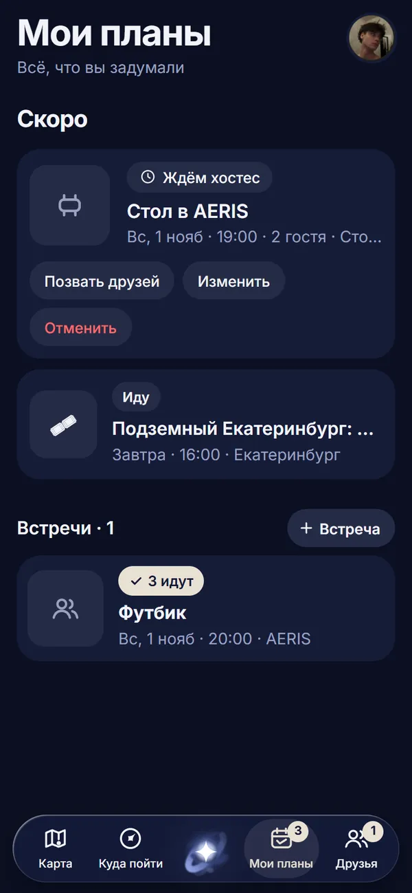
Мои планы
Брони, события и встречи с друзьями в одном списке.
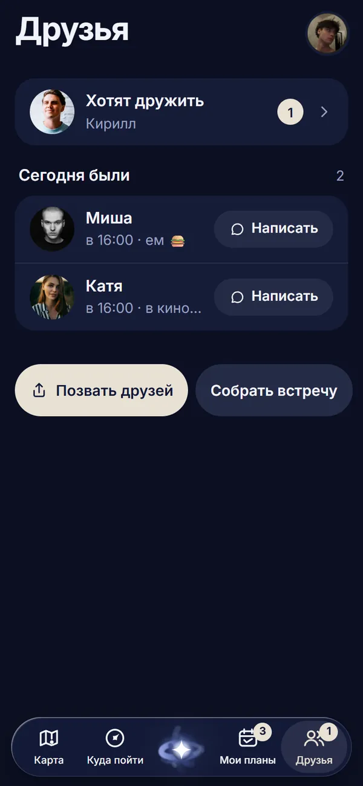
Друзья
Позовите друзей ссылкой и соберите встречу в пару касаний.
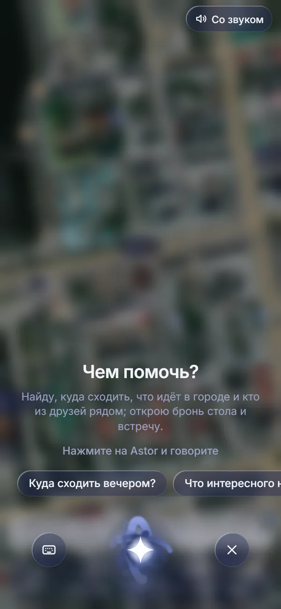
ИИ-помощник Astor
Спросите голосом или текстом, куда сходить вечером и что интересного в городе.
Как это работает
От желания до встречи – четыре шага
-

1желание
Скажите, чего хочется
Нажмите на Astor и скажите голосом или напишите: «куда сходить вечером с друзьями?». Помощник подберёт места и события рядом.
-

2выбор
Выберите место или событие
В карточке места – часы работы, адрес и маршрут. У событий – цена и кто из друзей идёт.
-

3бронь
Забронируйте стол
День, время и число гостей – в три шага. Заявка уходит команде заведения, бронь подтверждает ресторан, ответ приходит в Telegram.
-
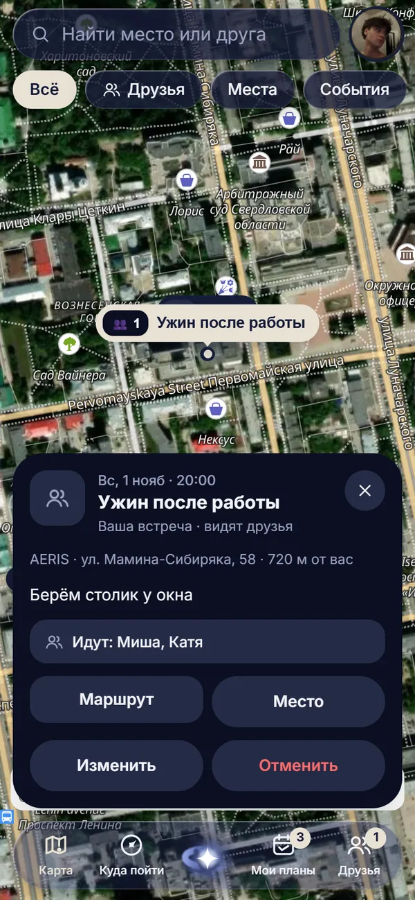
4встреча
Позовите друзей
Соберите встречу: место, время и кого позвать. Друзья получат приглашение в Telegram и отметятся «Иду».
Для заведений и организаторов
Гости находят вас в Astor, заявки приходят команде
Кабинет Astor Бизнес открывается в Telegram, как и приложение: хостес и менеджеру не нужен новый экран на стойке. Гости и отзывы на снимках кабинета – демонстрационные.
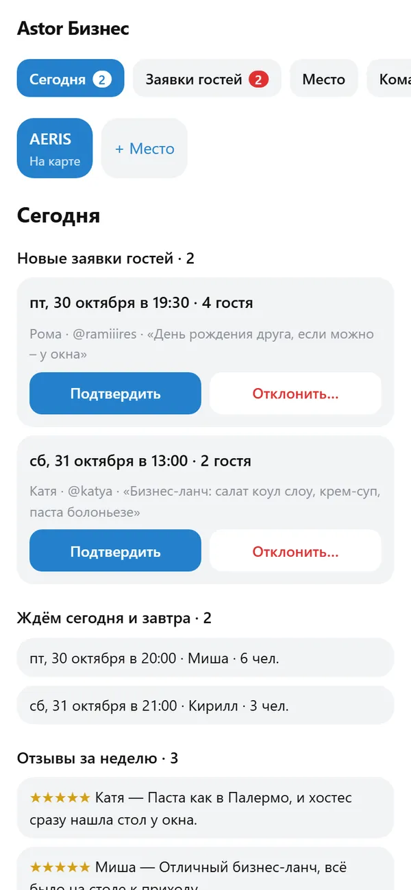
Сегодня
Брони на сегодня и завтра, новые заявки гостей, ближайшее событие и отзывы за неделю.
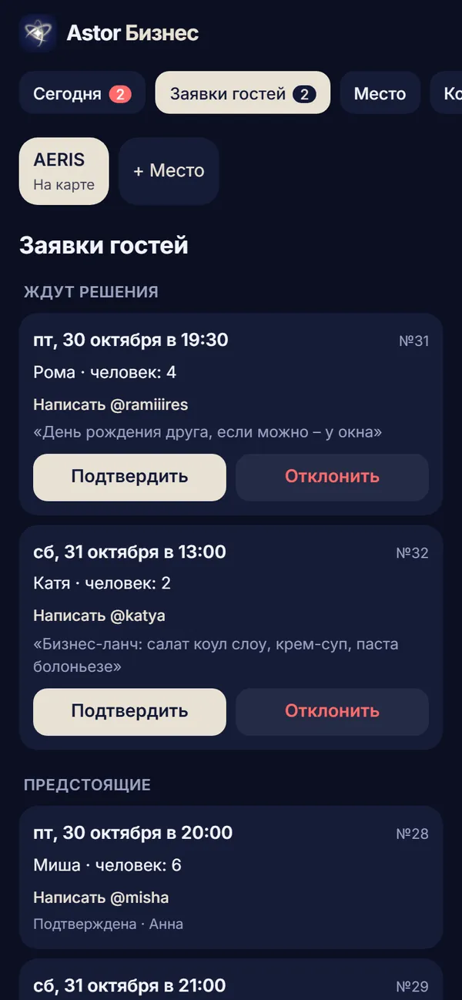
Заявки гостей
Ответ уходит гостю сообщением от бота. Отказ – с причиной, её увидит гость.
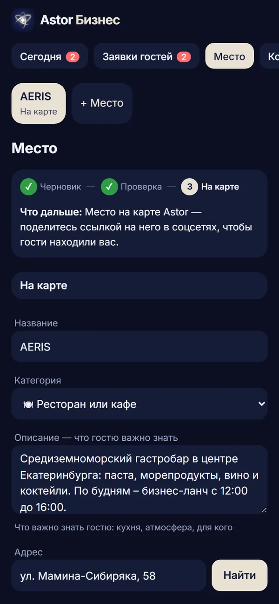
Ваше место
Фото, адрес на карте, часы и описание – так вас видят в приложении.
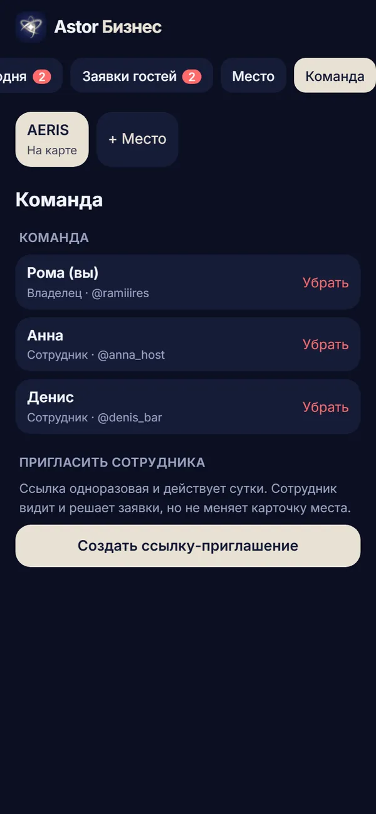
Команда
Пригласите сотрудников ссылкой: каждый видит заявки и брони своего места.
-
Брони в рабочий чат
Заявка на стол приходит карточкой в чат персонала в Telegram. Хостес нажимает «Подтвердить» или «Отклонить», гость сразу получает ответ.
-
Свои события
Вечера, мастер-классы и занятия появляются в афише Astor и на карте.
-
Отзывы гостей
После визита гость ставит оценку. Отзывы приходят в кабинет, команда отвечает на них.
-
Бизнес-ланч
По будням гость заранее собирает обед из ваших блюд в приложении – кухня знает заказ до его прихода.
Как подключиться
- Напишите Михаилу – расскажите о месте.
- Место появляется в Astor: карточка, фото, часы, бронь.
- Команда работает в кабинете Astor Бизнес и в рабочем чате Telegram.
30 000 ₽ в месяц подписка для ресторана, поддержка включена
Написать Михаилу в Telegramили на почту michael.poedinenko.mxr@gmail.com
Правила Astor
ИИ помогает, решения остаются за людьми
Бронь подтверждает ресторан
Astor собирает заявку, а подтверждает её хостес.
Вас видят только друзья
Место на карте показывается друзьям и только если вы сами включили показ.
Друзья – по взаимному согласию
В друзья добавляют по приглашению, заявку можно отклонить.
ИИ на GigaChat
Помощник Astor работает на российской языковой модели GigaChat.
Чем помочь?
Подскажу, куда сходить и что идёт в городе, покажу, кто из друзей рядом, и помогу забронировать стол.
Спросить Astor в Telegram